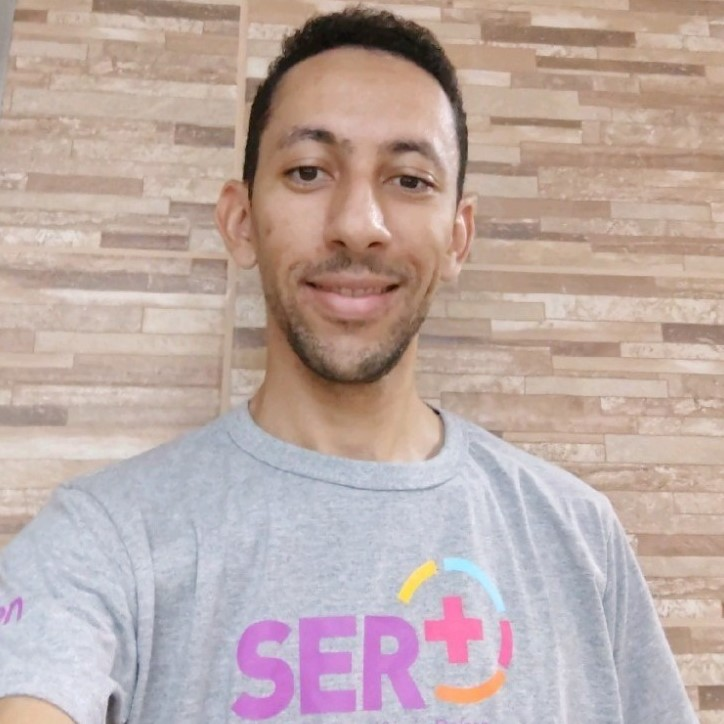

Geasi C. Rodrigues
Dados Pessoais;
Rua dos Moura, N°510, Bairro: Jardim Sergio Antonio Corona
CEP:15970-000 – Santa Ernestina – SP
Cel: (16) 99792-4882
Idade: 33 anos
Relacionamento: Casado
Escolaridade;
Ensino Médio Completo
Cursos;
SENAI
- Tecnologia para usinagem
- Usinagem I
- Usinagem II
- Mecânica de manutenção industrial
- Programador de centro de usinagem cnc
- Operador de torno e centro de usinagem cnc
- Auto CAD 2D para mecânica
- Inventor
Raízen - unidade bonfim
- Metodologia 5S, NR 11, NR 35,
Prodata Informática Onbyte
- Contabilidade e mat. financeira, hardware, flash, vb mod I, vb mod II
Cursando;
- Formação Full Stack JavaScript
Experiência profissional
Raízen unidade bonfim; Desde 11/04/2007
- Torneiro mecânico sênior
Funções; torneiro, fresador, Oper. de furadeira radial, plainas, serras, auxilio na manutenção mecânica, etc.